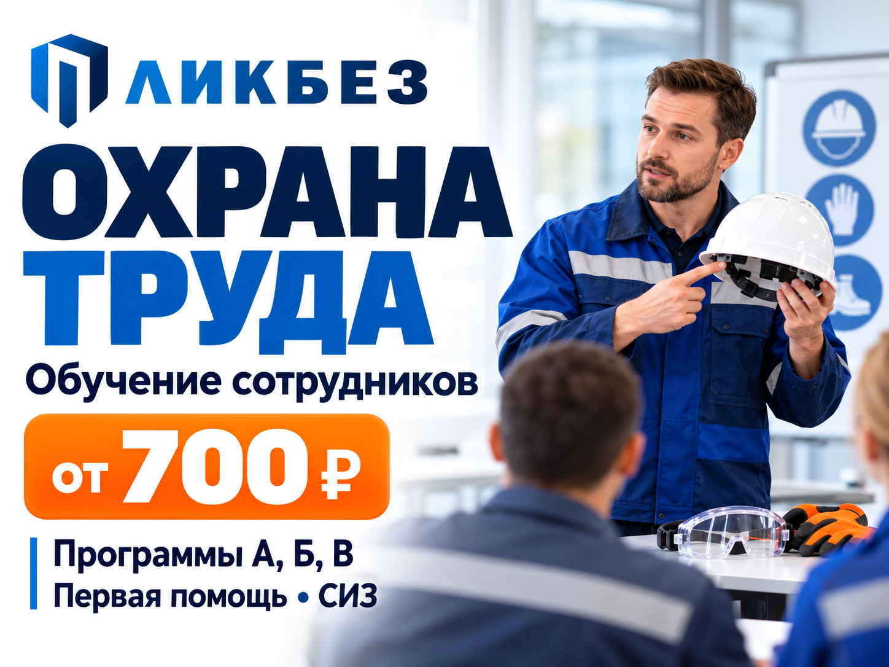
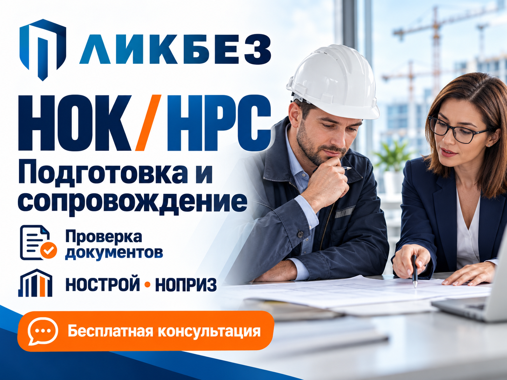
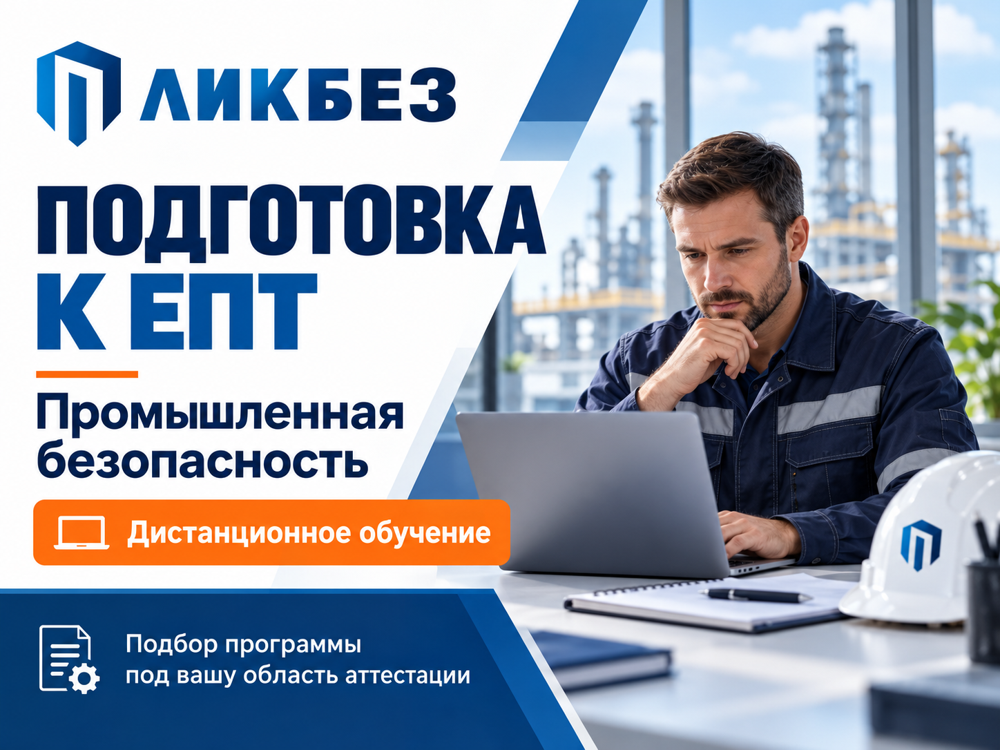

Обучение по охране труда для руководителей, специалистов и сотрудников — от 700 ₽ за программу. Учебный центр «ЛИКБЕЗ» поможет подобрать обучение под должность, обязанности и условия работы. Подойдёт для новых сотрудников и планового обучения персонала. ПРОГРАММЫ • А — общие вопросы охраны труда и работа системы управления охраной труда. • Б — безопасные методы работы при воздействии вредных и опасных факторов. • В — безопасное выполнение работ повышенной опасности. • Первая помощь пострадавшим. • Применение средств индивидуальной защиты. Охрана труда, первая помощь и СИЗ — от 700 ₽ за каждую выбранную программу. Итоговая стоимость зависит от программы и количества слушателей. Рассчитаем её до заключения договора. КАК ПРОХОДИТ ОБУЧЕНИЕ 1. Вы сообщаете должности сотрудников и задачи организации. 2. Мы подбираем программы, согласовываем формат, сроки и стоимость. 3. Заключаем договор и организуем обучение и проверку знаний. 4. Оформляем документы по результатам обучения. Сведения передаём в предусмотренные для выбранной программы реестры. Работаем с организациями и ИП из разных регионов. Дистанционный формат доступен с учётом требований выбранной программы; необходимость практической части уточним до оплаты. Напишите в чат должности и количество сотрудников — подскажем, какие программы нужны, и рассчитаем стоимость. Консультация бесплатная.

Подготовка к НОК и сопровождение внесения в НРС НОСТРОЙ / НОПРИЗ. Учебный центр «ЛИКБЕЗ» поможет разобраться в требованиях, проверить документы и пройти этапы подготовки заявки. Работаем со специалистами и организациями из всех регионов России. ЧЕМ ПОМОЖЕМ • Бесплатно разберём вашу ситуацию и проверим комплектность документов. • Проанализируем документы об образовании и стаже. • Поможем подготовиться к независимой оценке квалификации и записаться на экзамен. • Подготовим заявление и комплект документов для НРС. • Сопроводим подачу и отслеживание результата рассмотрения. Если ранее был отказ или исключение из реестра, сначала изучим причину и оценим возможные дальнейшие действия. СТОИМОСТЬ Услуги сопровождения — от 1 000 ₽. Состав работ и окончательную стоимость согласовываем после проверки документов и фиксируем в договоре. Стоимость экзамена и дополнительные расходы уточняются отдельно. КАК РАБОТАЕМ 1. Вы рассказываете, какая задача стоит: НОК, первое внесение в НРС или работа после отказа. 2. Мы проверяем исходные данные и согласовываем план действий. 3. Заключаем договор и готовим документы. 4. Сопровождаем согласованные этапы и сообщаем о результате. Экзамен специалист сдаёт лично. Решение о квалификации принимает центр оценки квалификаций, о включении в НРС — соответствующее национальное объединение. Напишите «НРС» и укажите направление — НОСТРОЙ или НОПРИЗ. Подскажем, с каких документов начать. Консультация бесплатная.

Подготовка к аттестации в ИС ЕПТ Ростехнадзора — промышленная безопасность. Нужно подготовиться к первичной или периодической аттестации? Учебный центр «ЛИКБЕЗ» поможет подобрать программу под вашу должность, оборудование и область аттестации. ДИСТАНЦИОННОЕ ОБУЧЕНИЕ Готовьтесь без поездок в учебный центр. Формат, продолжительность программы и порядок обучения согласуем до заключения договора. НАПРАВЛЕНИЯ ПОДГОТОВКИ • А.1 — основы промышленной безопасности. • Химическая, нефтехимическая, нефтяная и газовая промышленность. • Металлургическая, горная и угольная промышленность. • Газораспределение и газопотребление. • Оборудование под давлением и подъёмные сооружения. • Другие направления — уточните нужный код области в чате. КАК НАЧАТЬ 1. Напишите должность и область аттестации. Если код неизвестен, расскажите, с каким оборудованием работаете. 2. Мы уточним исходные данные и поможем подобрать программу. 3. Согласуем стоимость, сроки и необходимые документы. 4. Заключим договор и организуем обучение. Подготовка и аттестация — отдельные этапы. Тестирование специалист проходит самостоятельно в установленном порядке; результат зависит от его знаний и прохождения экзамена. СТОИМОСТЬ Рассчитывается по выбранной программе и количеству слушателей. До оплаты сообщим состав услуги и отдельно уточним возможные расходы на аттестацию. Работаем с руководителями и специалистами организаций из разных регионов. Требования к образованию и документам уточняем для выбранной программы. Напишите «ЕПТ», код области и количество сотрудников — подберём программу и рассчитаем стоимость. Первичная консультация бесплатная.